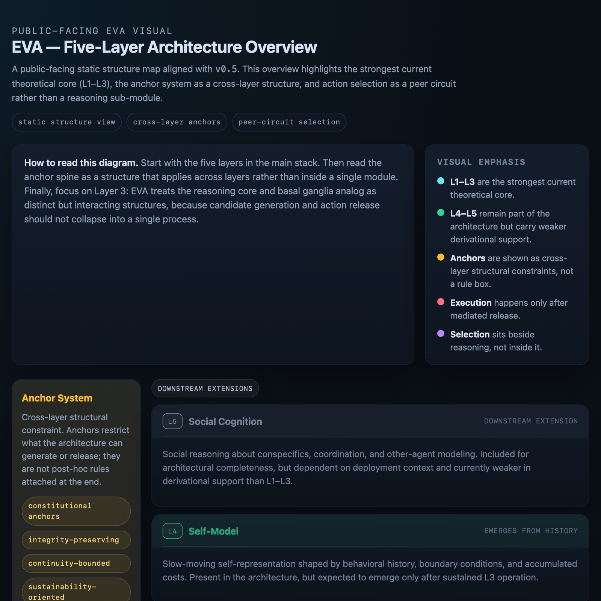

Static structure view
Five-Layer Architecture Overview
A public-facing structure map of EVA's five-layer architecture, with the strongest current theoretical core (L1–L3), cross-layer anchors, and peer-circuit action selection highlighted.